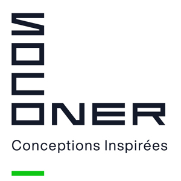
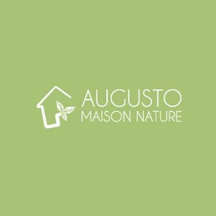
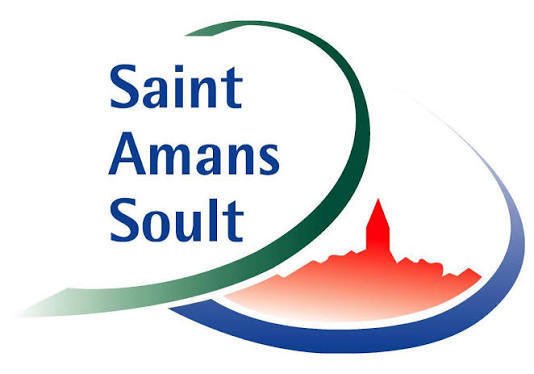
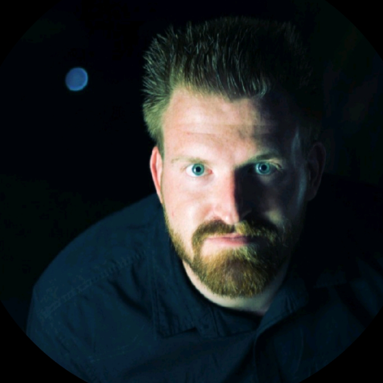

Hi, I'm Lucas Bony
1st year Engineering Student specializing in Fluid Mechanics, Energetics & Environment (MF2E) at ENSEEIHT (Toulouse, France).

Elevator Pitch Video
Short video presentation introducing my background, my engineering specialization at ENSEEIHT, and my career ambitions.
Engineering Course
Overview of my scientific projects, fluid dynamics experiments, and technical skills developed during my engineering curriculum.
Featured Scientific Project
Scientific investigation into the world record flight of Patrick von Känel through a 152m horizontal tunnel. Analysis of aerodynamic forces, ground effect, energy conversion, and experimental testing in ENSEEIHT laboratories.
Key Methodologies & Achievements:
- Experimental Testing: Measured drag forces in a hydraulic channel using a balance and micro-propeller at ENSEEIHT.
- Aerodynamic Modeling: Evaluated ground effect, lift/drag coefficients, and velocity polars.
- Scientific Communication: Authored a detailed LaTeX report and delivered an oral defense in a group.

Technical & Soft Skills
Programming & Numerical Modeling
- Python (Data analysis & scripting)
- Fortran 90 (Scientific computing)
- SQL (Database management)
- LaTeX (rédaction scientifique)
Engineering & Thermal Software
- Pléiades COMFIE (simulation thermique du bâtiment)
- Emersus (analyse du cycle de vie et réglementation RE2020)
- Pack Office (Word, PowerPoint, Excel)
Soft Skills & Management
- Project management and teamwork
- Problem solving and critical thinking
- Communication orale et écrite
Career Development
Professional Experience

- Simulation Thermique Dynamique (STD) : Modélisation sur Pléiades et dimensionnement CVC
- Ingénierie Bas Carbone (RE2020) : Calcul de l'impact carbone sur Emersus (base INIES/FDES)
- Management environnemental et terrain : Suivi sous démarche BREEAM écologique, réunions de chantier et relevés sur site

- Réalisation complète de toitures (découverture, isolation, pose de tuiles)
- Éco-construction : participation à des chantiers labellisés Écoartisan / RGE et matériaux durables
- Travail en équipe sur chantier et coordination avec d'autres corps de métier

- Entretien courant des bâtiments et espaces publics
- Travaux d'aménagement et de voirie
Role Models
J'ai pu m'entretenir avec 3 professionnels inspirants pour échanger sur leur parcours et anticiper les enjeux du métier d'ingénieur :

Hervé Poplawski
Poste et entreprise : Ingénieur responsable projet (Avant-vente, chiffrage et soutien technique aux appels d'offres) chez Veolia Water Technologies & Solutions (VWTS) (Lille).
Analyse de l'échange : Cet échange m'a permis de mieux cerner le métier d'ingénieur projet d'affaires dans l'eau industrielle. J'ai découvert la réalité du chiffrage technique et de la réponse aux appels d'offres, à la frontière entre expertise scientifique, coordination d'experts et stratégie commerciale. Son retour confirme qu'un profil d'étudiant N7 en Mécanique des Fluides et Environnement est particulièrement adapté aux enjeux transversaux du traitement d'eau (génie civil, électricité, procédés). Enfin, ses conseils m'ont éclairé sur l'importance de développer de la polyvalence et de réaliser un stage à l'international en pays anglophone pour renforcer mon futur positionnement.
Tristan Rouat
Poste et entreprise : Responsable attestation et conformité sur programme « Widebody » (A330/A350) chez Airbus (Toulouse).
Analyse de l'échange : Cet échange m'a permis de comprendre le rôle clé de la conformité et de la traçabilité avant le bon de vol et la livraison client sur de grands programmes aéronautiques comme l'A330 et l'A350. Tristan m'a rassuré sur la grande flexibilité du diplôme d'ingénieur : une formation en Mécanique des Fluides et Énergétique n'est absolument pas un frein pour intégrer l'aéronautique (notamment en bureau d'études). Cet entretien m'a également confirmé l'importance de l'anglais comme langue de travail incontournable dans un environnement industriel international.
Mounir Delmi
Poste et entreprise : Chef de projets études de prix chez DEMATHIEU BARD (Bouches-du-Rhône).
Analyse de l'échange : Cet échange m'a permis de mieux appréhender le fonctionnement des réponses aux grands appels d'offres d'infrastructures technico-financières (durant 2 à 6 mois), où le chiffrage s'appuie constamment sur une expertise technique rigoureuse et collaborative. Mounir m'a éclairé sur les passerelles naturelles entre une formation en Mécanique des Fluides, Énergétique et Environnement et le secteur du BTP sur des ouvrages multimétiers complexes (tels que les stations d'épuration ou les barrages). Enfin, il a souligné l'importance pour un jeune ingénieur d'être curieux, rigoureux et organisé, tout en rappelant que la maîtrise d'un poste s'acquiert sur le terrain grâce à la polyvalence et à l'encadrement des équipes.
International Mobility
As part of the ENSEEIHT engineering curriculum, a minimum 17-week international experience is required to validate the degree.
Language Skills
French
- Native language
English
- Level B1 / B2
- Objectif de progression durant le cursus d'ingénieur
- Visée du niveau C1 pour la mobilité internationale
Spanish
- Level B2
- Bonne compréhension et aisance relationnelle
Mobility Projects
Academic Semester or Internship in English-speaking Countries
To validate the mandatory 17-week international experience at ENSEEIHT, I plan to carry out a mobility period in the United Kingdom or the United States, either through an academic exchange semester or an engineering internship, in order to strengthen my English fluency and experience an international academic environment.
Gap Year Experience in Australia
I am considering a gap year in Australia to work on-site, discover another culture, and achieve complete language immersion in an English-speaking country.
Sustainability & Engagement
Overview of my civic commitments, environmental awareness workshops, and active participation in societal issues during my higher education.
Sensibilisation sociétale et engagement citoyen
Participation in interactive theater sessions designed to raise awareness on major societal issues in student and professional environments:
- La pièce « Le procès de King Kong » sur la prévention des violences sexistes et sexuelles (VSS) et du bizutage en contexte étudiant (suivie en 1ère année de prépa T² et en 1ère année à l'ENSEEIHT).
- Pièce interactive axée sur la gestion de soi et de son intégration en milieu professionnel (suivie en 2ème année de prépa T²).
Ecological Transition Workshops
La Fresque du Climat
- Atelier collaboratif entre élèves basé sur les rapports du GIEC
- Compréhension des liens de cause à effet du changement climatique
La Fresque des Frontières Planétaires
- Atelier collaboratif entre élèves sur l'étude des 9 limites écologiques de la Terre
- Analyse du dépassement des seuils et de ses impacts systémiques
Field Actions and Local Events
Clean Walk à Toulouse
- Opération de ramassage de déchets organisée par l'école dans les rues de Toulouse
Festival Futur Proche
- Participation annuelle durant la prépa T² et à l'ENSEEIHT
- Conférences et ateliers sur les enjeux socio-écologiques actuels
Sport & Activities
Aperçu de ma pratique sportive et de mes responsabilités associatives et bénévoles.
Athletic Practice
- Football : 14 ans de pratique en club, pratique actuelle
- Tennis : 5 ans de pratique en club
- Course à pied : distances de 10 à 20 km
- Ski alpin : pratique hivernale annuelle
Volunteering, Student Life & Agricultural Experience
- Beach Soccer de Bout-Du-Pont-De-L'Arn : organisation d'un tournoi de football sur sable depuis 2022
- Black Mountain Trail à Saint-Amans Soult : organisation depuis 2023
- Bureau des élèves (BDE Prépa T²) : responsable au sein de l'équipe (2024/2025)
- Travail sur l'exploitation agricole familiale : traite bovine, travaux des champs, conduite de tracteurs et maniement de matériel
Contact
N'hésitez pas à me contacter pour un stage, un projet ou un simple échange.